複数の軸破断
複数の軸破断
概要
Originは、ひとつの軸に対して複数の軸破断をサポートしています。軸破断の数や位置は軸ダイアログボックスで制御します。さらに、X軸上に複数の参照線を追加してそれらのギャップを埋めることにより、リセッションバー（下図の垂直のバー）を作成することができます。
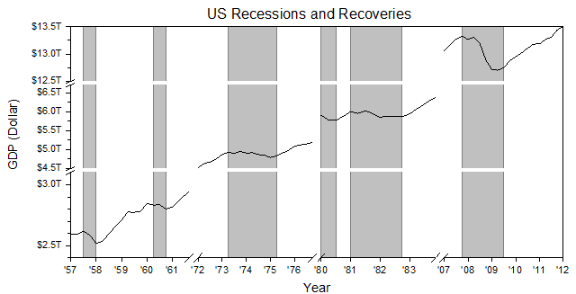
必要なOriginのバージョン: 2017 SR0以降
学習する項目
このチュートリアルでは、以下の項目について解説します。
- X軸とY軸に複数の軸破断追加する
- 軸目盛ラベルフォーマットの編集
- 欠損値領域を垂直に塗りつぶす
ラベル表示の編集と軸破断追加の操作
このチュートリアルは、<Origin EXE Folder>\Samples\Tutorial Data.opjというプロジェクトのMultiple Axis Breaksと関連しています。
このグラフはラーニングセンターからも開けます（ヘルプ： ラーニングセンターメニューを選択するか、F11 キーを押します）。線＋シンボルグラフのグラフサンプル表 にリストされています。サムネイルをダブルクリックすると、対象のフォルダが開きます。
- ワークブックをアクティブにします。列A、Bを選択してメニューから作図：基本の2Dグラフ：折れ線を選択して、グラフを作成します。凡例を選択し、削除します。
- グラフ軸を編集するために、下軸をクリックし、ミニツールバーの軸ダイアログボタンをクリックして、ドロップダウンリストの一番下を選択します。
- 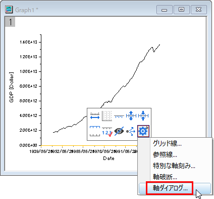
- ダイアログの水平方向のスケールタブで、下図のようにグラフのスケールを設定します。
- 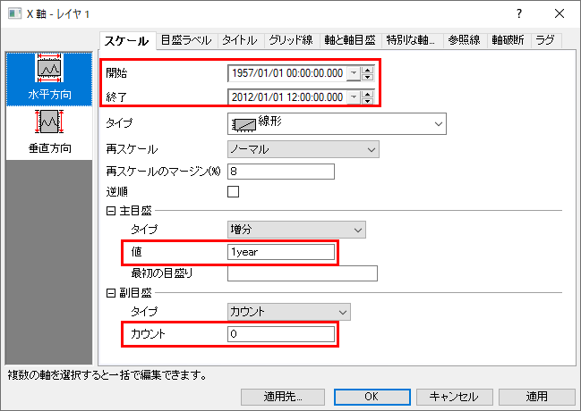
- 目盛ラベルタブを開き、左側パネルで下軸アイコンを選択します。タイプが日付になっていることを確認してから表示を20 (2桁の西暦を意味します)に変更し、ラベル接頭語として'を追加します。
- 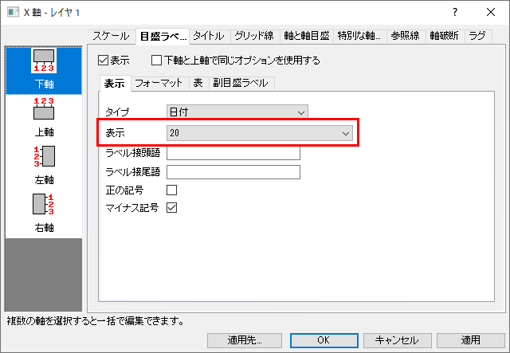
- X 軸にいくつかの軸破断を追加するために、軸破断タブで水平アイコンを選択します。有効にするにチェックをつけ、3つの軸破断を設定します。
- 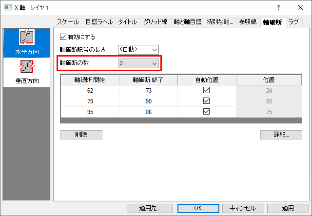
- 詳細ボタンを押し、軸破断の詳細ダイアログを開きます。破断1を選択して1961/12/01から1972/09/01と設定します。
- 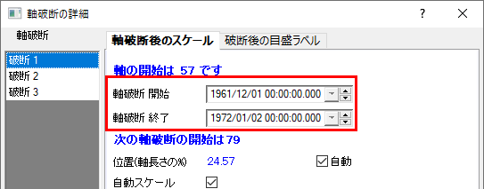
- 破断2を左側パネルから選択し、開始と終了を1977/03/31と1980/08/29に設定します。破断3を選択し、開始と終了をそれぞれ1984/07/27と2007/03/01に設定します。OKボタンをクリックして軸破断の詳細を閉じて軸ダイアログに戻ります。適用ボタンをクリックして、変更を表示します。
- これからY軸の編集を行います。左パネルで目盛ラベルタブを開いてから左パネルの左軸アイコンをクリックします。表示を工学：1Kにします。ラベル接頭語として「＄」を入力します。適用をクリックしてグラフを更新します。
- 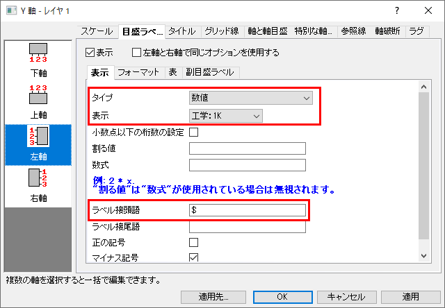
- 軸破断タブを開き左パネルで垂直を選択します。軸破断の数を2に設定して、ステップ4と6でX軸に行ったように、それぞれのスケールを3.1T から 4.5T 、 6.7T から 12.5Tに設定します。
- OK をクリックして設定を適用し、以下のようなグラフが作図されます。
- 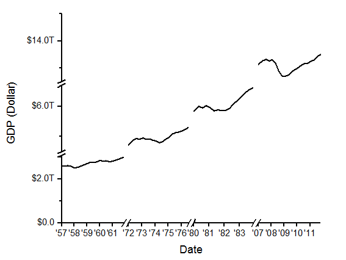
 | 軸破断が追加されると、破断上をクリックして開くミニツールバーを使って、破断シンボルの長さや形状、シンボルの間隔といった破断の見た目を変更できます。
- 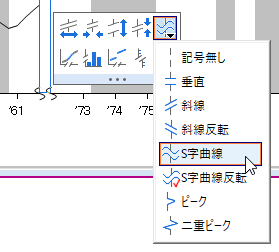
|
リセッションバーの追加操作
- X軸をダブルクリックして、軸ダイアログを開きます。参照線タブで、値の参照線テキストボックスの隣にある、参照ボタン
 をクリックして、ワークシートからcol(C)を選択します。すべてのリセッション間隔のX軸は、参照線として表にリスト化されます。交互塗りつぶしボックスにチェックを入れて、各間隔を塗りつぶします。
をクリックして、ワークシートからcol(C)を選択します。すべてのリセッション間隔のX軸は、参照線として表にリスト化されます。交互塗りつぶしボックスにチェックを入れて、各間隔を塗りつぶします。
- 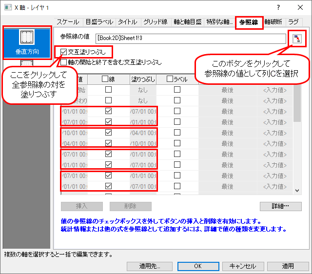
- OKをクリックして、設定を適用します。
- 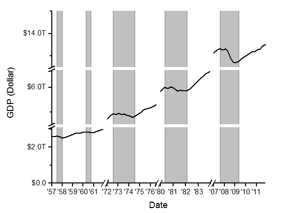
グラフの編集
以下の編集操作により、サマリーで表示されている画像のグラフと同じようにグラフを編集します。
- グラフのX 軸タイトルDate上でダブルクリックして、名称をYearに変更します。
- Y 軸範囲を編集するために、左軸をクリックし、ミニツールバーの軸ダイアログボタンをクリックして、ドロップダウンリストの一番下を選択します。スケールタブで垂直方向アイコンを選択した状態で、開始と終了、主目盛、副目盛を設定します。
- 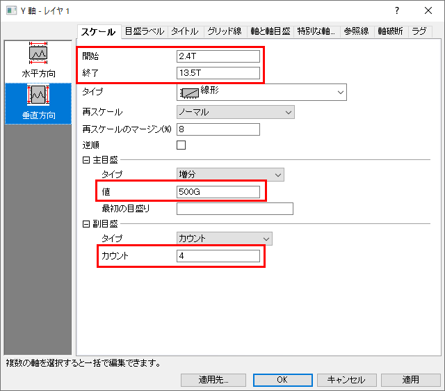
- 再び、軸破断タブを開きます。最初の破断を選択した状態で詳細ボタンをクリックし、破断1が選択された軸破断の詳細ダイアログを開きます。位置（軸長さの％）オプションの隣にある自動のチェックをはずし、38％に変更します。自動スケールのチェックを外して目盛りの設定を以下のようにします。
- 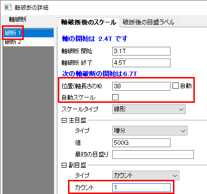
- 軸破断2を選択して、位置、主目盛の値、副目盛のカウントを以下のように設定します。
- 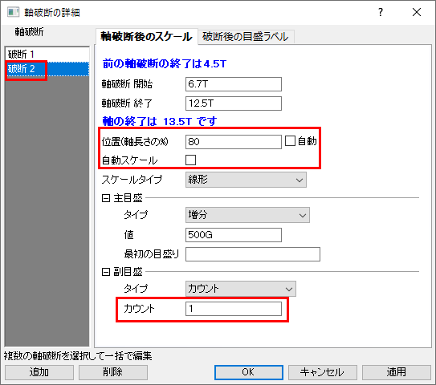
- OK をクリックして設定を適用し、軸破断の詳細ダイアログを閉じます。軸ダイアログで適用をクリックして、設定内容を適用します。
- グリッド線タブを開きます。左側のパネルで垂直と水平アイコンの両方を選び、反対をチェックして上軸と右軸を表示します。
- グラフ内の空白部分で、右クリックして、コンテキストメニューからレイヤタイトルを追加/変更を選択します。タイトルとして、US Recessions and Recoveriesを入力します。
- 作図の詳細ダイアログでグラフページ領域を調整します。
- 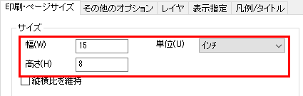